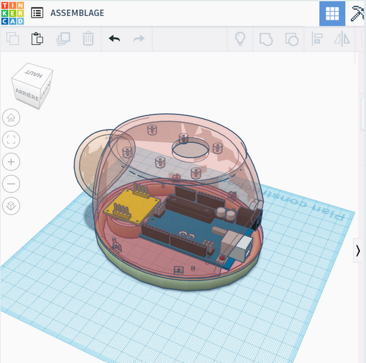

Dans l'objectif de passer un oral de bac, j'ai effectué au lycée un projet visant à concevoir un robot caméléon,
comportant plusieurs options : le changement de couleur en fonction du support sur lequel il se trouve, la détection de mouvement, ainsi que la prise de température.
Cela m'a permit :
L'acquisition des bases en programmation C++ sur Arduino :
Programmation des différents capteurs
Utilisation de logiciels de conception 3D : AutodeskTinkercad
Impression 3d
Conception d'un site web sur Wordpress
Travail en équipe, répartition des tâches
Pour de plus amples détails, je vous invite à visiter mon site ci-dessous.

INFORMATIQUE ET SYSTÈMES
Projet sniffer ethernet
Projet Sniffer Ethernet - En partenariat avec Thalès Alenia Space
Projet d'études
Nous avons effectué ce projet en collaboration avec Thales Alenia Space lors de ma première année de Bachelor Universitaire de Technologie en réseaux et télécommunications
Le projet avait pour but de réceptionner un fichier binaire brut,
afin de l'analyser et le traiter pour pouvoir afficher ses données triées sur un site web dynamique,
le tout sur un Raspberry Pi 3.
Nous étions un groupe de trois étudiants.
Voici les tâches auxquelles j'ai participé :
J'ai pu participer au code Python qui avait pour but d'analyser le contenu des trames et d'en filtrer ses données.
J'ai configuré sur le Raspberry Pi 3 un serveur PHPMyadmin ainsi qu'un serveur web Apache2 pour héberger notre site web.
J'ai conçu les différentes tables des bases de données, je les ai liées au code python, ainsi qu'au site web sur lequel j'ai réalisé des requêtes SQL pour pouvoir afficher clairement les informations correspondantes à un test précis, choisi par l'utilisateur.
Mes camarades et moi avons pu étudier à cette occasion la gestion de projet, l'importance de la planification (diagramme de Gantt), de la répartition des tâches, ainsi que de la gestion des différents risques auxquels nous aurions pu être confrontés.
Ci-dessous quelques photos de notre site final, vous pouvez retrouver également notre rapport pour de plus amples détails.
DÉVELOPPEMENT WEB
Site web sur les chats
Conception de mon premier site web
Au cours de la première année de B.U.T. en réseaux et télécommunications,
j'ai été amenée à concevoir un site web en binôme sur un sujet que nous apprécions bien : les chats.
Ce projet m'a permit de progresser dans les compétences suivantes :
Programmation web : HTML 5
Graphisme : CSS 3
vérification du code sur W3C
Le lien vers notre site figure ci-dessous.
CYBERSÉCURITÉ
Étude de l'hygiène informatique
Étude de l'hygiène informatique - Introduction à la cybersécurité
Au cours de ma première année en B.U.T. Réseaux et Télécommunications, nous avons abordé les principes fondamentaux de la cybersécurité. Cette étude a porté sur l'identification des différentes mesures nécessaires et la promotion de bonnes pratiques d'hygiène informatique. Ces concepts ont été explorés en réponse à divers types d'attaques potentielles,
soulignant ainsi l'importance de préparer et de protéger efficacement les systèmes contre les menaces numériques.
Ci-dessous une présentation des différentes attaques étudiées, ainsi qu'une vidéo résumant l'une d'entre elles : Le Malware Meow.
J'ai pu mettre en oeuvre les pratiques suivantes :
- Connaissance des Principes Fondamentaux de la Cybersécurité.
- Identification des Mesures de Sécurité.
- Promotion des Bonnes Pratiques d'Hygiène Informatique.
- Analyse des Attaques Spécifiques.
- Sensibilisation à la Sécurité.
Conception d'une petite structure d'un réseau d'entreprise
Projet d'études
Lors de ma première année de B.U.T. en Réseaux et Télécommunications, j'ai eu l'opportunité de mettre en œuvre le réseau informatique d'une PME,
démontrant ainsi mes compétences dans la configuration des équipements réseau fondamentaux tels que les commutateurs et routeurs Cisco.
L'objectif principal était donc de réaliser un réseau d'une petite entreprise, généralement structuré en trois zones distinctes :
interne,
DMZ (Zone Démilitarisée)
et externe.
La zone interne abrite les ressources sensibles de l'entreprise, telles que les serveurs de fichiers et les bases de données, et est généralement protégée par des pare-feu pour réguler l'accès. La DMZ agit comme une zone intermédiaire entre l'interne et l'externe, hébergeant des serveurs accessibles depuis Internet tels que les serveurs Web ou de messagerie. Cela permet de limiter l'exposition directe des ressources internes aux menaces extérieures. Enfin, la zone externe représente l'accès à Internet et est également protégée par des pare-feu pour filtrer le trafic indésirable.
Ce projet a permit le développement de plusieurs compétences, à savoir :
La configuration des équipements réseaux de base : commutateurs, routeurs
La configuration d'un parefeu, des niveau de sécurité attribuées aux différentes zones de l'entreprise
La configuration de vlans, de serveurs DNS, WEB (HTTP) et DHCP
Nat statique et dynamique, port-forwading
Vous avez la possibilité de parcourir ci-dessous le rapport effectué tout au long de ce projet, ainsi qu'une vidéo résumant notre travail :
Ci dessus, le schéma topologique.
En bleu : VLAN 1
En rose :VLAN 2
En vert : VLAN 3
COMMUNICATION
Interview d'un professionnel des réseaux
Réalisation d'une interview et élaboration d'une infographie
Lors de ma première année de B.U.T. en Réseaux et Télécommunications, nous avons eu pour projet de réaliser une infographie,
le but était de résumer et de présenter au mieux les caractéristiques d'un métier des réseaux. Pour cela en amont, nous avons
effectué une première infographie sur le métier de pentester, à partir d'une vidéo d'Orange Cyberdéfense Visualiser la vidéo en cliquant ici.
Nous nous sommes ensuite mis en situation, et avons simulé des interviews pour nous préparer à tous types de situations.
Il nous fallait ensuite trouver un professionnel à interroger, et pour ce faire, nous avons étudié ce qu'était le réseau relationnel, et avons pu joindre Monsieur David Barker, ingénieur en sécurité électronique par l'intermédiaire d'un de nos professeurs.
Réaliser cette infographie m'a permit :
- De développer mon réseau relationnel.
- De prendre des initiatives en contactant avec des professionnels.
- D'établir et de respecter un planning pour finaliser le projet dans les temps.
- Préparer une interview, un questionnaire, sélectionner les questions les plus pertinentes.
- Réaliser une infographie visuellement et vocabulairement parlante, sans surcharge d'informations.
Nos infographies finales figurent par ailleurs ci-dessous.
Première infographie sur le métier de Pentester
Infographie sur le métier d'ingénieur en sécurité électronique, résultante de l'interview de Monsieur BARKER David.
Ci-dessous notre support de présentation orale, permettant de comprendre les différentes étapes empruntées menant
à la réalisation de notre infographie.